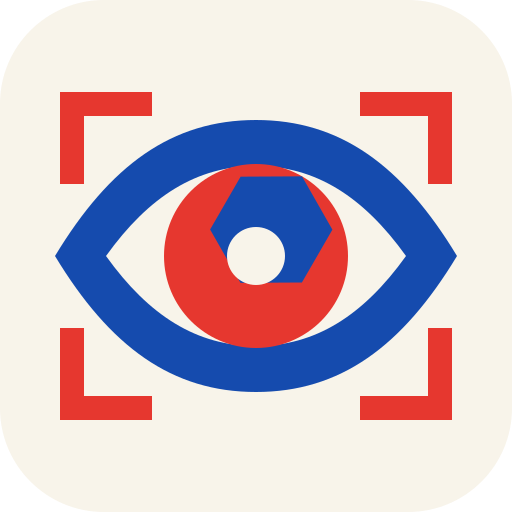
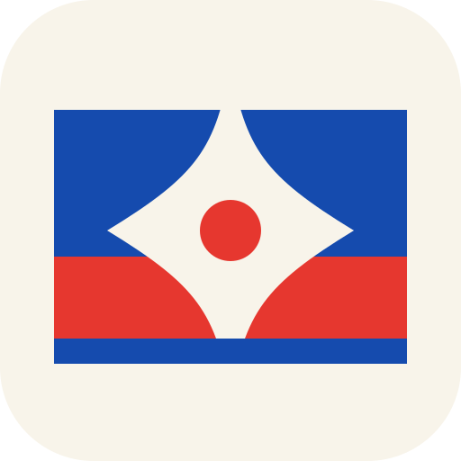
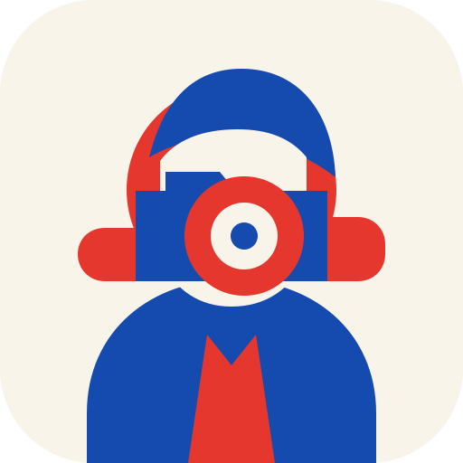
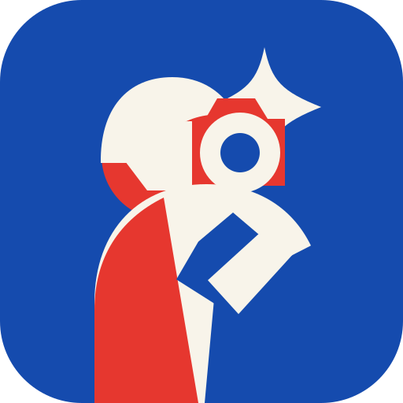
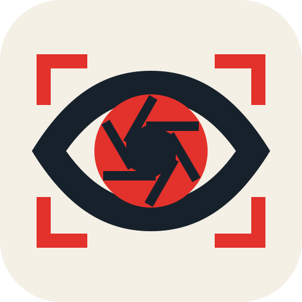
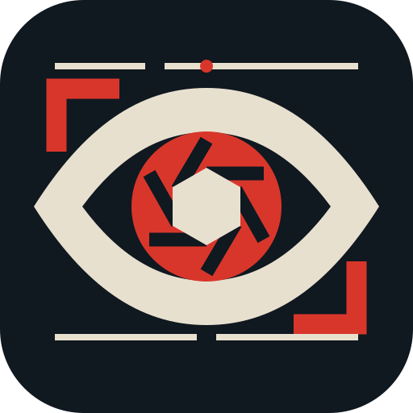
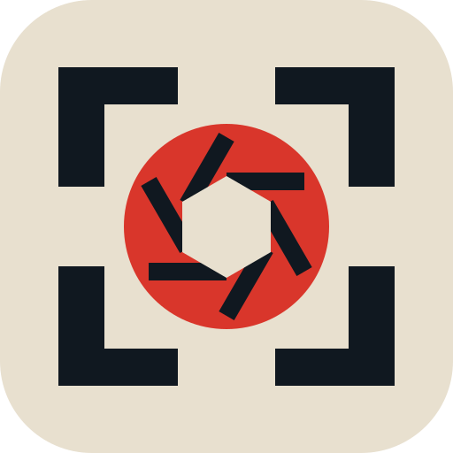
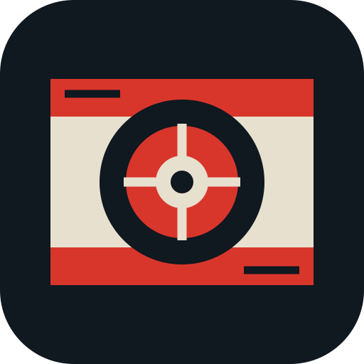
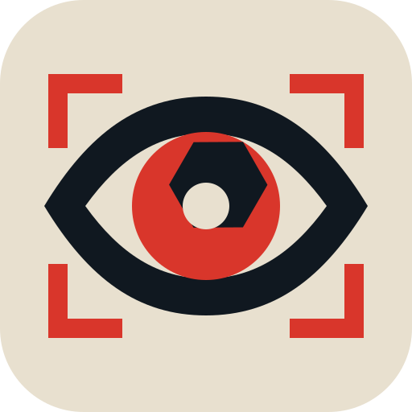

NEWSWORTHY
Icon studies · full mark and favicon sizes

02 · News Eye
Editorial attention turned into a camera aperture—the choice of what becomes news.
03 · Flash Bulletin
A camera flash interrupting the red-and-blue grammar of a television news bulletin.
04 · The Photographer
A direct player avatar: the person behind the camera is the center of the game.
05 · In the Field
A more energetic player symbol: camera raised, flash firing, chasing the shot.
06 · Shutter Eye
The original News Eye, clarified: a six-blade shutter is now unmistakably the iris.
07 · Wire Eye
The same idea translated into the wire-desk language: carbon black, paper, signal red, crop marks.
08 · Live Shutter
An opening-ident study. The finder locks, shutter turns, and the frame flashes; its resting frame still works as an icon.09 · Signal Aperture
A pure camera mark with a live-transmission cue. Less watchful than the eye, still unmistakably news.
10 · Focus Lock
The most game-like option: crop marks closing around the decisive shot.
11 · Wirephoto Target
A filed news image reduced to a transmission frame, editorial bars, and a lens target.12 · Split Second
The photographic instant itself: shutter panels, a red exposure point, and a hard flash.